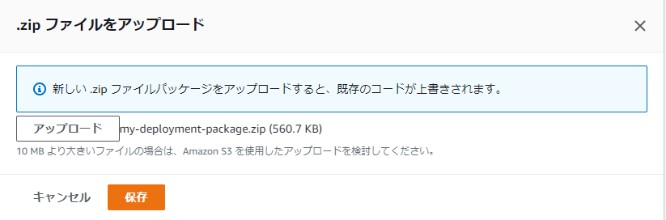
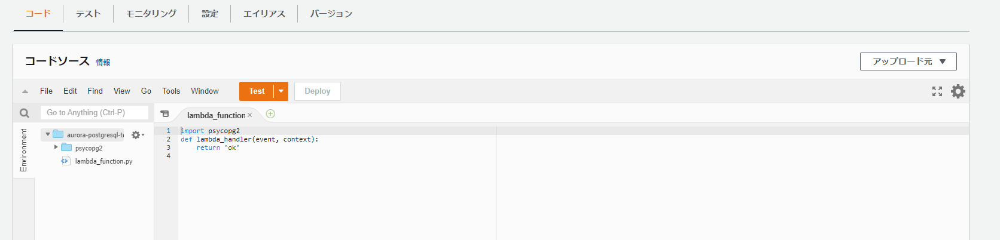
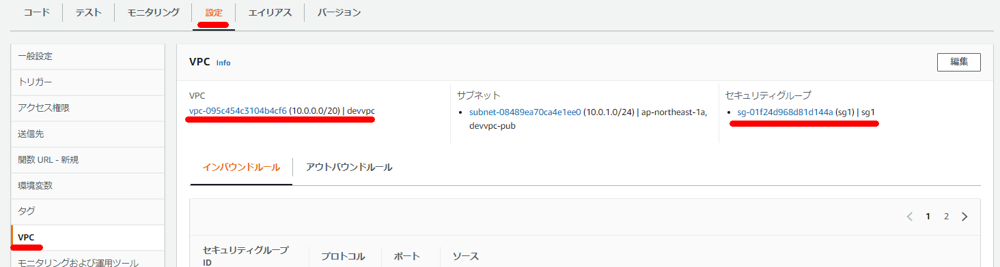

Lambdaからawslambda-psycopg2を使用してAurora PostgreSQLに接続
Lambda上で psycopg2 をそのまま利用するにはひと手間必要なのでawslambda-psycopg2を使ってAurora PostgreSQLに接続する。
ライブラリをダウンロード
git clone https://github.com/jkehler/awslambda-psycopg2.git
[ec2-user@bastin lambda]$ git clone https://github.com/jkehler/awslambda-psycopg2.git
Cloning into 'awslambda-psycopg2'...
remote: Enumerating objects: 210, done.
remote: Counting objects: 100% (26/26), done.
remote: Compressing objects: 100% (21/21), done.
remote: Total 210 (delta 5), reused 22 (delta 5), pack-reused 184
Receiving objects: 100% (210/210), 3.57 MiB | 8.89 MiB/s, done.
Resolving deltas: 100% (81/81), done.
[ec2-user@bastin lambda]$ ls -l
total 0
drwxrwxr-x 8 ec2-user ec2-user 153 May 6 15:41 awslambda-psycopg2
デプロイ用のパッケージの作成
mkdir -p upload-lambda/package
touch upload-lambda/lambda_function.py
mv awslambda-psycopg2/psycopg2-3.8 upload-lambda/package/psycopg2
テスト用のスクリプトを準備
動作させるだけのスクリプトをとりあえず準備。
cat << EOF > upload-lambda/lambda_function.py
import psycopg2
def lambda_handler(event, context):
return 'ok'
EOF
psycopg2-binaryをzipファイルに含める
cd ./upload-lambda/package/
zip -r ../my-deployment-package.zip .
lambda_function.pyをzipファイルに含める
cd ..
zip -r ./my-deployment-package.zip lambda_function.py
下記の通りのフォルダ構成となっていることを確認
tree upload-lambda upload-lambda ├── lambda_function.py ├── my-deployment-package.zip └── package └── psycopg2


Lambda側のVPCの設定
VPCを使用する設定にして、Aurora側に接続できるようなセキュリティグループ設定を行う。

簡易確認
ここまでやってDeploy→Testで正常に動作することを確認する。
接続用スクリプトの準備
import psycopg2
import psycopg2.extras
import time
import datetime
import logging
import sys
import os
def lambda_handler(event, context):
print('event: {}'.format(event))
print('context: {}'.format(context))
logger = logging.getLogger()
logger.setLevel(logging.INFO)
conn = psycopg2.connect("host=auroraserverlessv2.cluster-xxxxxx.ap-northeast-1.rds.amazonaws.com port=5432 dbname=postgres user=postgres password=postgres")
cur = conn.cursor()
logger.info("SUCCESS: Connection to RDS Aurora instance succeeded")
sql = "test用のSQL"
logger.info(sql)
with conn.cursor() as cur:
cur.execute(sql, (bucket, key))
conn.commit()
conn.commit()
cur.close()
conn.close()
デプロイして正常にいくかどうかを確認する
関連しているかもしれない記事
- pgAdmin4からAurora PostgreSQLへ踏み台サーバのポートフォワード経由で接続する
- DynamoDBからkinesis firehose経由でS3に出力時にJSON形式からCSV形式に変換するLamdba用のPythonスクリプト
- DynamoDBからkinesis firehose経由でS3に出力
- Auroraの各バージョンのサポート期間
- Aurora PostgreSQLのDB監査方式（Database Activity Streams or pgaudit？）